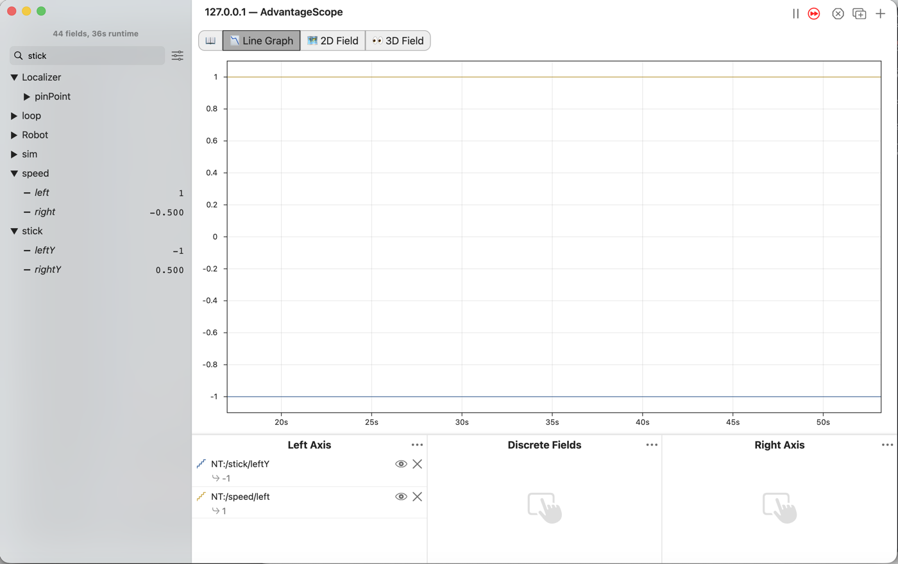
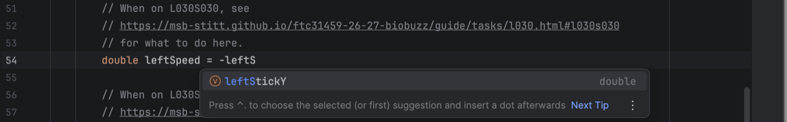

L030: turn the sticks into speeds¶

AdvantageScope’s Line Graph connected to the simulator, with NT:/stick/leftY drawn at -1 and NT:/speed/left drawn at 1, and speed/right reading -0.500 beside stick/rightY at 0.500 in the list.¶
Turn each stick into a wheel speed, where forward is positive. Nothing on the robot moves yet.
Before you start.
L020 is done, so
mytryholdsL020SticksOpMode.AdvantageScope is installed on the same laptop, and a gamepad is plugged into the laptop.
No robot is needed.
The steps¶
L030S010: copy the starter into mytry¶
Copy.
Open
TeamCode/java/org.firstinspires.ftc.teamcode/lessons.Click
L030SpeedsOpModeonce, and copy it: ⌘C on a Mac, Ctrl+C on Windows.Click the
mytryfolder once, and paste.The Copy Class box opens with Destination package already ending in
mytry. Click OK.If Android Studio asks whether to add the file to Git, click Add.
Check.
mytryholdsL020SticksOpModeandL030SpeedsOpMode, and the new file is open.
L030S020: switch your copy on¶
Change. Find the line @Disabled, just under the comment that names this step, and delete
the whole line, the way you did in L020.
Check.
Under the step’s comment, the next line reads
// 'public' so the robot can run this OpMode. 'public' allows access from any code.
L030S030: the left speed¶
We are working toward tank drive, where the left stick drives the left wheels and the right stick drives the right wheels. Push a stick away from you and its wheels should turn forward. We call forward speeds positive and backward speeds negative. But in L020 a stick pushed away read -1, so its number has to be turned round to make a speed.
The starter already has the four lines you wrote in L020. They read the sticks and write them down.
Change. Under the comment that names this step, type double leftSpeed = -leftS. The list
offers leftStickY, the name from the lines above. Press Tab, then finish the two lines:

The list under -leftS, offering the variable leftStickY, marked double.¶
// When on L030S030, see
// https://msb-stitt.github.io/ftc31459-26-27-biobuzz/guide/tasks/l030.html#l030s030
// for what to do here.
double leftSpeed = -leftStickY;
Tracker.publish("speed/left", leftSpeed);
The minus sign turns the number round: -1 becomes 1, and 0.5 becomes -0.5. leftStickY is still
what the stick says, and leftSpeed is how fast the wheels should go. Keeping two names for the
two ideas means each name always says what it holds.
Simulator. In the Terminal, run:
./gradlew :TeamCode:simRun --args="mytry.L030SpeedsOpMode --pad"
AdvantageScope. Connect to the simulator as in L020. Type stick in the search box. Drag
leftY from the stick folder, and left from the speed folder, into Left Axis.
Check.
Push the left stick away from you.
stick/leftYgoes to -1, andspeed/leftgoes to 1.The two lines are always mirror images of each other.
L030S040: the right speed¶
Change. Press Ctrl+C in the Terminal to stop the simulator. Under the comment that names this step, do the same for the right stick:
// When on L030S040, see
// https://msb-stitt.github.io/ftc31459-26-27-biobuzz/guide/tasks/l030.html#l030s040
// for what to do here.
double rightSpeed = -rightStickY;
Tracker.publish("speed/right", rightSpeed);
Simulator. Run the same command again.
AdvantageScope. Drag rightY from stick and right from speed into Left Axis.
Check.
Push both sticks away from you. Both speeds read 1.
Pull both back, and both read -1.
No gamepad. --args="mytry.L030SpeedsOpMode --left_stick_y=-1 --right_stick_y=0.5" holds the
left stick full forward and the right stick half back. The picture at the top was taken that way:
speed/left reads 1 and speed/right reads -0.500.
What you just did. Each speed is its stick with a minus sign in front, so forward is positive
from here on. The stick and the speed have separate names because they are separate things: one
is what the driver’s hand does, the other is what the wheels should do. A name like
leftStick = -gamepad1.left_stick_y would hide that.
Where next. L040 sends leftSpeed and rightSpeed to the wheels and drives the
robot in the simulator.